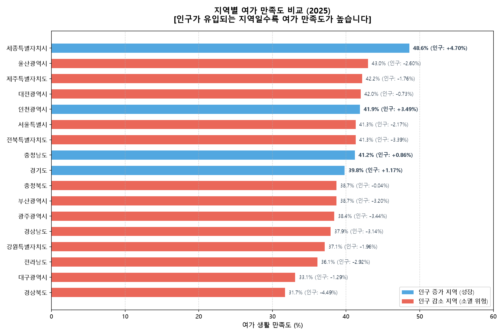
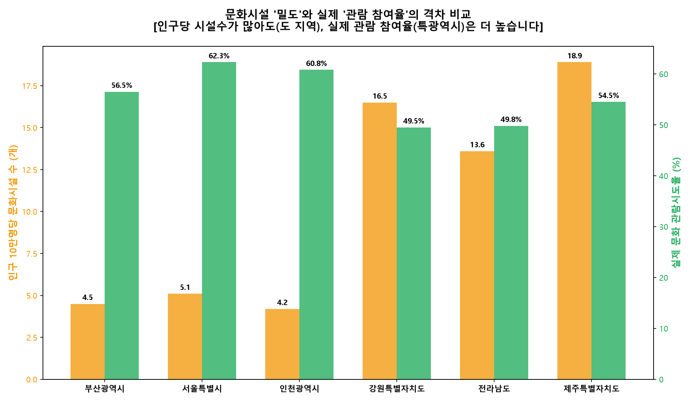
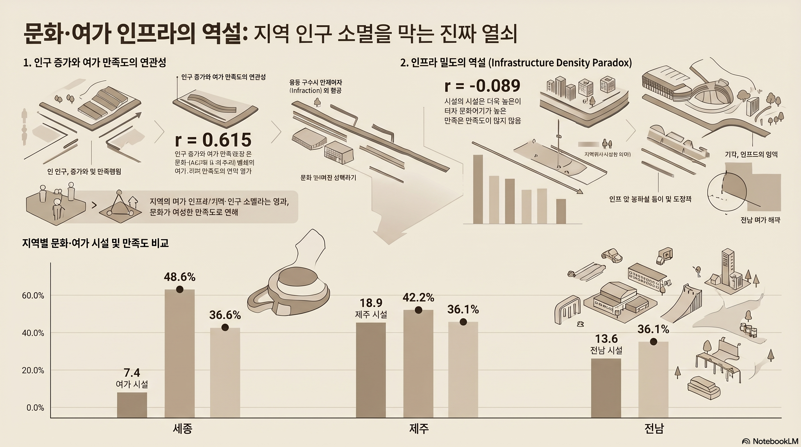
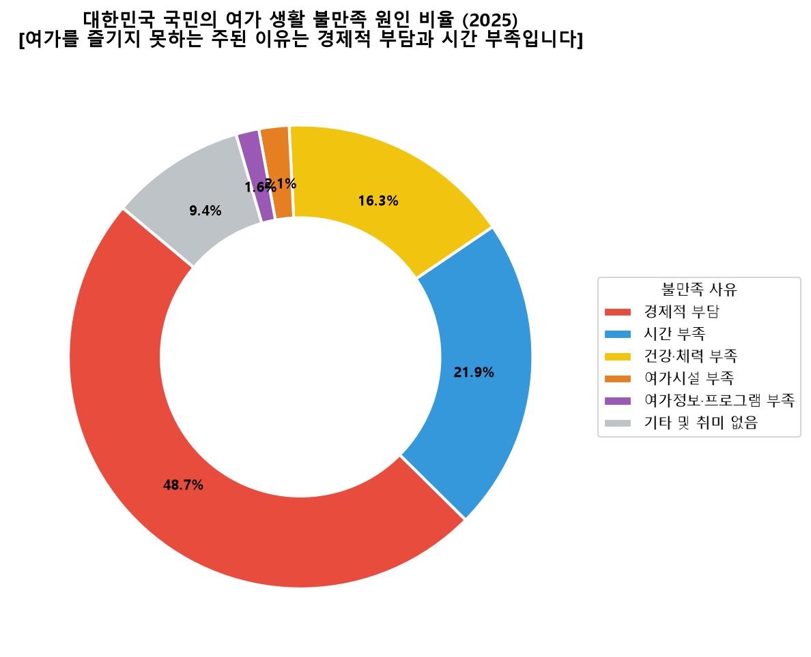
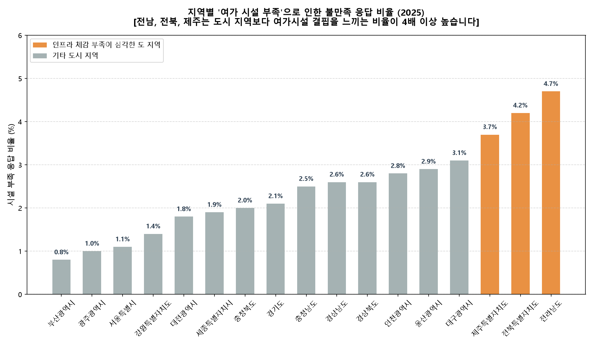

양적 공급의 착시와 문화 양극화
지역별 여가 만족도와 인구 소멸 연관성 연구를 토대로 공공 통계 데이터 모델링 분석을 통한 정책적 제언을 제시합니다.
1. 요약 (Executive Summary)
인구 불균형 가속화
수도권 및 일부 신도시로의 인구 쏠림이 가중되는 반면, 지방 도(道) 지역의 인구 감소 속도는 임계점을 돌파하고 있습니다.
양적 공급의 왜곡
인구당 문화 인프라 개수는 지방이 월등하나 실제 주민 체감 만족도 및 활용 비율은 최하위권에 머무르는 역설이 관찰됩니다.
질적 여가만족 연관성
영화, 공연, 스포츠 관람 등 실제 활동적인 여가를 향유할 수 있는 환경 차이가 인구 증감율과 밀접한 선형 상관관계를 보입니다.
2. 전국 주요 여가 지표 비교
대한민국 전체(전국 평균)의 주요 연도별 여가 만족도 지표 변화 구조입니다. 양적 인프라 밀도와는 대조되는 질적 불일치 현상이 확인됩니다.
| 구분 지표 | 2021년 통계 결과 | 2023년 통계 결과 | 2025년 전망 지표 | 격차 요인 분석 |
|---|---|---|---|---|
| 여가 생활 만족도 (%) | 27.0% | 34.2% | 39.4% ↑ | 수도권 및 특광역시 중심의 회복 효과 주도 |
| 여가 생활 불만족도 (%) | 23.5% | 18.7% | 15.9% ↓ | 문화 정보 격차 및 도-농 편중 불만 상존 |
| 문화 관람 시도율 (%) | 24.1% | 55.3% | 57.7% | 수요는 급증했으나 영남/호남 산간지역 공급 한계 |
| 10만명당 문화시설 (개) | 6.1개 | 6.4개 | 6.5개 | 지속적인 증가세 속 실질 체감 효율성은 분화됨 |

여가 만족 비율(좌축)과 최근 연도별 지역 정주 인구 변화 관계
지자체 단위 10만명당 시설 밀도 분포 대비 실질 관람 향유 기회의 쏠림 대조3. 변수 간 상관관계 분석 및 해설
행정구역 수집 통계를 상호 정렬하여 피어슨 선형 상관계수를 추적했습니다. 계수의 수치가 도로 위 인구 이탈의 원인을 어떻게 명시하는지 진단합니다.

문화 여가 시설 지표와 주민 웰빙, 지방 소멸 지수 간 가중 데이터 분포

전체 설문 조사 응답자 여가생활 불만 원인(경제적 한계, 동반자 결핍, 시설 원거리 배치) 비율
전남(4.7%), 전북(4.2%), 강원(1.4%) 등의 주민들이 시설이 수치상 많음에도 불구하고 인프라 한계 불만을 가장 민감하게 보고하였습니다. 이는 실제 체감 가능한 문화 서비스 전달 경로의 설계 부재를 반증합니다.
4. 지역별 분석 (Regional Case Studies)
아래 인터랙티브 지역 탐색기에서 각 시도를 클릭해 보십시오. 2020년 대비 2024년의 삶의 만족도 및 자살률 지표의 다이내믹한 수치 변동과 상세 사례 분석을 보실 수 있습니다.
5. 정책 제언 (Conclusion & Policy Implications)
단순 공급 위주의 산술적 평정 극복
인구 10만명당 개수 중심의 양적 실적 홍보를 중단하고, 시설의 지리적 근접도와 실질 가동 퀄리티를 중심에 둔 수요자 중심 평가 모델을 안착시켜야 합니다.
찾아가는 문화 및 유연성 모빌리티 보조
물리적 이동이 차단되어 문화 혜택을 체감하지 못하는 농어촌 주민들을 타겟팅한 스마트 문화 셔틀, 찾아가는 이동식 예술 복지 차량 사업의 입법 예산 편성이 긴급합니다.
민관 협력형 라이프스타일 랜드마크 유치
경직된 공공 문화원 배치에서 벗어나, 상업용 극장, 피트니스 짐 등 라이프스타일 변화가 연계된 민간 협력 앵커 테넌트 유치를 지방 정주 매력도 핵심 축으로 삼아야 합니다.
• **여가 만족도와 인구 증가율**: **r = +0.615**로 매우 강한 양의 선형 관계를 나타냅니다. 쾌적한 여가 정주 여건이 우수한 인구 보전 및 유입에 직접적으로 기여함을 증명합니다.
• **인프라 밀도와 주민 관람 시도율**: **r = -0.529**로 뚜렷한 음의 관계가 성립됩니다. 시설물 가용 수치만 높을 뿐, 접근성이 차단된 지방 산간 권역의 질적 정체를 여실히 노출합니다.